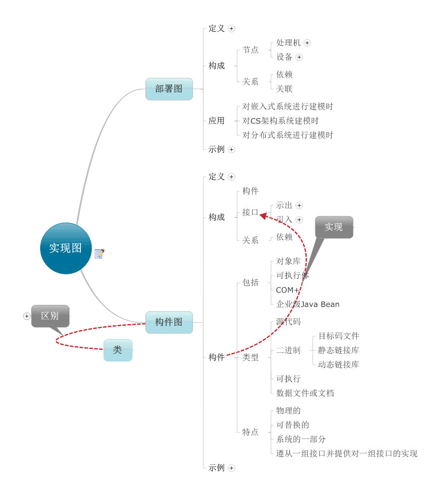
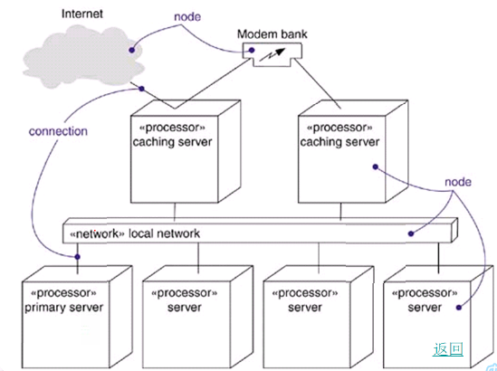
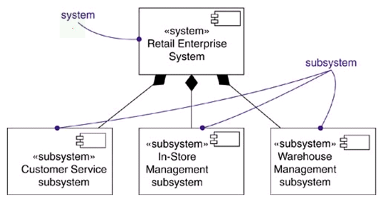

UML的实现图用来描述系统实现方面的信息，它从系统的层次描述硬件的组成和布局，软件系统的划分和功能实现。实现图包含构件图和部署图。构件图显示一组构件之间的组织和依赖关系，并秒速其中的构造细节。部署图用来描述系统硬件的物理结构及在此结构上执行的软件。

构件图从软件架构的角度来描述系统的主要功能，比如系统分成几个子系统，每个子系统包含哪些类，包等和它们之间的关系等。使用构件图可以清楚的看出系统的结构和功能。
构件的种类
构件是系统中遵从一组接口且提供其实现的物理的，可替换的部分。构件能够完成独立功能，它是软件系统的组成部分。在功能划分的软件系统中，软件被分成一个个的模块。随着面向对象技术的引用，软件系统被分成若干个子系统，构件。每个构件能够实现一定的功能，为其他构件提供使用接口，方便软件的复用。
1，配置构件：包含操作系统，java虚拟机以及数据库管理系统等，这是形成可执行文件的基础。
2，工作产品构件：这是由模型，源代码和配置文件等组成由UML图，java类和jar文件，EJB中的实体，xml配置文件，动态链接库以及数据库表等。
3，执行构件：在运行时创建的构件，是最终运行系统中通过这些构件来产生结果。
部署图
部署图描述了系统运行时的硬件节点以及在这些节点上运行的软件构件的静态视图。部署图显示了系统中的硬件，安装在硬件上的软件以及用于连接异构机器的中间件。
节点是运行时各种硬件资源的通用名称。节点可以用来表示各种资源的类型以及包含对象和构件的实例。
节点类型：
1，处理器
处理器是指能够执行软件，具有计算能力的节点。例如：服务器，工作站等。
2，设备
设备是指没有计算能力的节点。通常情况下是通过接口为外部提供服务的节点，如打印机，显示器或扫描仪等。
示例：
 
部署图 构件图